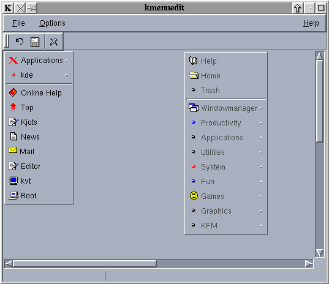
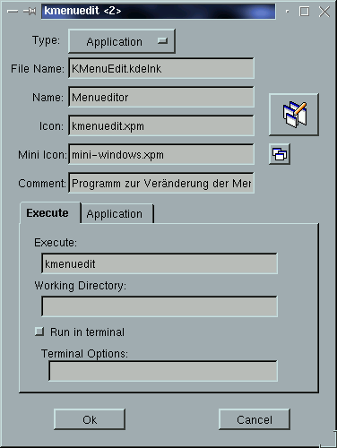

Kmenuedit manages a directory hierarchy of kdelnk-files.
This is an alpha release of kmenuedit
Most systems use binary or ascii encoded configuration files to define a menu structure. KDE takes a different approach. KDE uses a directory hierarchy of kdelnk-files. Each submenu corresponds to a directory and each menuentry corresponds to a kdelnk-file. (kdelnk-files are special ascii files which names' end in '.kdelnk'.)
One way to edit the menu is to move or copy the kdelnk-files and to change the files with the properties dialog of kfm.
The other way is to use KMenuedit.
KMenuedit tries to hide the details of kdelnk-files from the user.
When you start KMenuedit for the first time it will probably ask you for your IconPath and the basedirectories of your menus. If you don't know what this means it should be save to say ok to both dialogs.
After KMenuedit has started it will show you two menus.

The left menu is your personal menu and the right menu is the system default menu. If you don't have a personal menu yet you will see a menu on the left with just one entry called 'EMPTY'.
The entries in the right menu are displayed with a gray color because you don't have write permission to the system default menu. If you start KMenuedit with sufficient privileges then this menu will be displayed normal and you may change it.
If you don't like the position of these menus in the window, hold down the shift key and the middle mouse button and move the menu arround. The position of the base menus will be saved for the next time you start KMenuedit.
There are several ways to add an entry to a menu:
To delete a menuentry press the right mouse button on this entry and select 'Delete' from it's popupmenu.
To open a submenu, select 'Open/ Close' from the popupmenu or click with the left mouse button on the menuentry. Do just the same to close the submenu. Note that closing a submenu closes all of it's submenus, too.
You may even use cut, copy and paste with menuentries by selecting the correspondig option in the popupmenu. Just select 'copy' on one menuentry and select 'paste' on another entry to insert the copied menuentry below this entry.
To move an entry to another position within it's menu, hold down the middle mouse button on this entry and move it around.
To insert an new seperator or submenu select 'New' from the popupmenu and change the new entry.
If you exit KMenuedit before saving no changes will be written to disk and if you want to discard all changes without restarting KMenuedit, just press the reload button.
To change a menuentry select 'Change' from it's popupmenu. You will be presented the following dialog.

The combobox in the first line selects the type of the menu entry. To see a description of the various types see Entry Types.
The next lines specify various attributes that are common to most menuentries.
If you want to change the icons, just click on the icon and select the new icon from a dialog.
The attributes within the tab-dialog are type specific and are described in Entry Types.
KDE knows about several types of kdelnk-files and so we have different types of menu-entries.
Submenu:
The submenu is not a kdelnk-file but a directory. So the only attributes
that make sense for a submenu are Name, Icon, MiniIcon and Comment.
Separator:
Like the submenu the separator is not a real kdelnk-file but this fact
makes no difference for the user. Since a separator is just a bar there
are no attributes you may set. Please note that the Separator is only used
by ktaskbar at the moment.
Application:
The application type is a real kdelnk-file. Please see the kfm
manual for a detailed description of its attributes.
Link:
The link is basically a link to an object in the WWW. Just insert it's
url in the corresponding field.
Device:
The device is a kdelnk-file, too. Please see the kfm
manual for details.
Fvwm Command:
The fvwm command is not an official kdelnk-file type and is only used
by the fvwm version of ktaskbar. It is used to send a command to fvwm.
I don't know. Suggestions are welcome.
Christoph Neerfeld